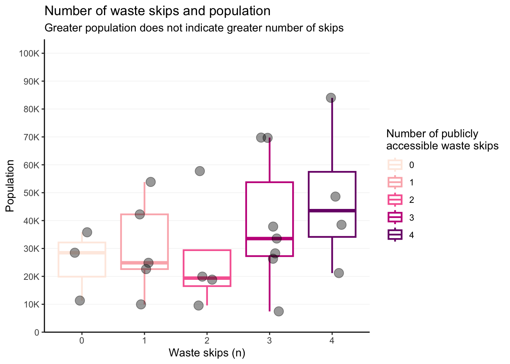

The goal of wasteskipsblantyre is to provide a dataset for research and planning of solid waste management in Blantyre, Malawi. The dataset includes locations of the publicly accessible waste skips in in the city. The data was collected in 2021 and has not been updated since.

Installation
You can install the development version of wasteskipsblantyre from GitHub with:
# install.packages("devtools")
devtools::install_github("openwashdata/wasteskipsblantyre")Alternatively, you can download the individual datasets as a CSV or XLSX file from the table below.
| dataset | CSV | XLSX |
|---|---|---|
| wasteskipsblantyre | Download CSV | Download XLSX |
Project goal
Data on the location of public waste skips in Blanytre was not available. Without such data, it becomes difficult to develop a solid waste management plan and logistics. The goal of this project was to identify the locations of public waste skips in Blantyre, Malawi.
Data
The data set includes the locations of the publicly accessible waste skips in Blantyre, Malawi. The data was collected in 2021.
library(wasteskipsblantyre)The wasteskipsblantyre data set has 4 variables and 53 observations. For an overview of the variable names, see the following table.
wasteskipsblantyre| variable_name | variable_type | description |
|---|---|---|
| name | character | Name of the waste skip location. |
| long | double | Longitude of the location as decimal degrees. |
| lat | double | Latitude of the location as decimal degrees. |
| capacity_l | double | Capacity of the container in liters. |

Locations of waste skips in this dataset
Example
The code below is an example which shows how you could use the data to prepare a map in R. Find this and more examples in the prepared examples article (vignette("examples")).
library(wasteskipsblantyre)
library(sf)
library(tmap)
# read data set into a simple feature (spatial vector data)
sf_wsb <- st_as_sf(wasteskipsblantyre, coords = c('long', 'lat'), crs = 4326)
# set mapping mode to interactive ("view")
tmap_mode("view")
# create an interactive map
qtm(sf_wsb)
Screenshot of the an interactive map with OpenStreetMap layer.
License
Data are available as CC-BY.
Citation
Please cite using:
citation("wasteskipsblantyre")
#> To cite package 'wasteskipsblantyre' in publications use:
#>
#> Yesaya M, Msuku L, Tilley E, Loos S (2023). "wasteskipsblantyre:
#> Locations of Public Waste Skips in Blantyre, Malawi."
#> doi:10.5281/zenodo.6470427 <https://doi.org/10.5281/zenodo.6470427>,
#> <https://openwashdata.github.io/wasteskipsblantyre/>.
#>
#> A BibTeX entry for LaTeX users is
#>
#> @Misc{yesayamsuku:2023,
#> title = {wasteskipsblantyre: Locations of Public Waste Skips in Blantyre, Malawi},
#> author = {Mabvuto Yesaya and Limbani Msuku and Elizabeth Tilley and Sebastian Camilo Loos},
#> year = {2023},
#> url = {https://openwashdata.github.io/wasteskipsblantyre/},
#> doi = {10.5281/zenodo.6470427},
#> abstract = {An R data package containing the locations of public waste skips in Blantyre, Malawi.},
#> version = {0.0.2},
#> }